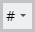

Note: text below is intentionally placed in a small box.
Use of the tbw-inpagelinks plugin
You can use above buttons to switch edit mode on or off.
In edit mode the plugin creates  button on Trumbowyg panel.
The button has dropdown menu with Create and Remove items.
How to
Create a label Use a label Remove a lable
- Creating a label
The tag to be labeled is determined by finding the nearest permitted tag from the current caret position.
Permitted tags are: li, h6-h1, p.
User provides a name for label with dialog.
Provided name is used to set the id attribute of the tag.
As there are certain constraints on id attribute value, user input is validated.
The labeling tag also receives CSS class .in-page-label.
This class determines the appearance of in-page labels in edit mode.
By default label is shown as a small superscript text above the tag.
- Use of a label
To create a link to a labeled tag use the "Insert link" dialog.
You should enter the label name prefixed with # symbol in the URL field of dialog.
- Removing a label
The Remove command finds the nearest permitted tag from the current caret position.
If tag found and it has CSS class .in-page-label, the class as well as the id attribute are removed.
The End of The Topic Back to the top